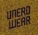

Cześć Kraków!
Rails Girls goes Krakow AGAIN: join the two-day bake off to the exciting world of building web applications with Ruby on Rails, with some jam-making action with fellow Railsberry attendees.
The applications for 2013 are closed. The 2015 event is here.
You learn designing, prototyping and coding with the help from our coaches.
You need your own laptop, curiosity and a sprinkle of imagination!
Want to help? We are looking for sponsors and speakers! Email us.
| 18.00 - 19.00 |
Registration and installation festGet know the attendees a little bit before hand. Bring your laptop if you can, so we can install Ruby on Rails for you. |
|---|---|
| 19:00 - 19:45 |
Tryruby.orgLet's get coding! |
| 19:45 - 20.30 |
How to train a robotIntroductory game/talk about programming by Irina Dumitrascu. |
| 21.00 - |
The PartyMixed with MMconf Afterparty. Open for everyone, meet cool people interested in tech. |
| 9:00 - 10:00 |
Registration, coffee and installation festDuring the morning we’ll install Ruby on Rails on your computer, if there has been problems before, get to know each other and have some coffee. |
|---|---|
| 10:00 - 10:30 |
WelcomeOutline of the day & word from sponsors. |
| 10:30 - 13:00 |
WORKSHOPJumpstart your first web application |
| 13:00 - 13:30 |
Lunch |
| 13:30 - 14:00 |
Bentobox - Understanding Web AppsRecap of what we’ve learned and how it all fits together. |
| 14:00 - 14:30 |
Lightning talksPawel Brodzinski (Lunar Logic)Mirek Woźniak (Hackerspace Kraków) Piotr Krawiec (u2i) Mariusz Łusiak Felipe Elias Philipp |
| 14:30 - 17:00 |
WORKSHOPExtend our application. |
| 17:00 - 17:15 |
Good-byeWe gonna make sure you know what to do next. |
| 21:00 - |
One more partyMixed with Railsberry Preparty. Open for everyone, meet even more cool people interested in tech. |
|---|
Applications open: March 1st
Applications close: April 1st
Acceptances informed: April 5th
Rails Girls Kraków is organized by WebMuses with our awesome partners.
Base Lab is a best workplace for hackers in Krakow.They hold monthly internal hackathons, present at conferences, contribute to open source projects, sponsor HackKRK and they're hiring.
 Lunar Logic
was Poland's first Rails shop. They're thrilled to be able to help RailsGirls introduce more people to the lovely land that is Rails
and they have jobs for a little more experienced programmers.
Lunar Logic
was Poland's first Rails shop. They're thrilled to be able to help RailsGirls introduce more people to the lovely land that is Rails
and they have jobs for a little more experienced programmers.
 u2i is a web techolongy consulting company
founded in NYC in 2001. But they've also been in Krakow since 2005. They're 32 people, and they can be everywhere right now - in one of the offices, on a plane or out, having lunch. And they're hiring.
u2i is a web techolongy consulting company
founded in NYC in 2001. But they've also been in Krakow since 2005. They're 32 people, and they can be everywhere right now - in one of the offices, on a plane or out, having lunch. And they're hiring.
314 APPS is software house which provide high-quality services. They practice Agile methods and web technologies such as Ruby on Rails and Flex to help your company rapidly evolve and deliver your final product.
Iteo creates mobile and web software, providing usable applications that answer various business needs. They code in PHP, Symfony2, Ruby on Rails and .Net and write mobile apps for Android and iOS.
Railsberry 2013 is a conference for curious Rails developers. It's where (love for) science meets magic. And it's all about mixing flavours and technologies and focusing on things you never played with. And more.
A web place produced by Ryan Bates with a free Ruby on Rails tips and tricks episode released every week.

Underwear
for nerds.
Because they really love softwear.
 WebMuses is a Krakow-based community brought into being to show women they can join IT world. Organizing workshops and events, evangelizing women (and not only) in the Web.
WebMuses is a Krakow-based community brought into being to show women they can join IT world. Organizing workshops and events, evangelizing women (and not only) in the Web.
Mislav Marohnić's blog 6.5.2012
Rails Girls in Railsberry blog 15.2.2013
Gazeta.pl 18.4.2012
How much does the workshop cost? Nothing, it's free! You just need to be excited!
Who is this aimed for? Women of any age with basic knowledge of working with a computer. We’ve had people of all ages taking part. Speeches and workshops are in polish or english. Please bring your laptop.
Can men attend? Yes, but girls are given a priority.
I think I might be too old for Rails Girls. You're not. It's about "girl power", not your age.
But I know nothing about programming. Great, apply right now! We all have been absolute beginners at some point in our life.